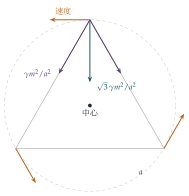

STEP I 1999，第 11 题
继续之前，请先阅读题目（原题为英文）。题目载于 STEP Support Programme 的题目资料库： step.maths.org/questions/99-s1-q11
引子
两个以引力互相吸引的天体，其运动可以完全解出，这是牛顿（Newton）证明了的，第 10.6 节 亦已解释过：两者各自沿一条圆锥曲线（conic）绕共同的质心（centre of mass）运动，若两者互相束缚，轨道是椭圆；若能量足以互相逃逸，则是抛物线或双曲线。再加入第三个天体，一切就不同了。三体问题（three-body problem）没有能用常见函数表示的通解，而在 1890 年，庞加莱（Henri Poincaré）更发现它的解可以是混沌的，这是混沌（chaos）在数学中首次出现。
然而，有些特殊解却十分简单。1772 年，拉格朗日（Joseph-Louis Lagrange）发现，位于等边三角形（equilateral triangle）三个顶点的三个天体可以作刚性旋转，整个三角形像车轮一样转动。本题要找的，就是质量相等时的这个解。拉格朗日的三角形并非只是趣闻：太阳、木星和数以千计的“特洛伊”（Trojan）小行星正好构成这种位形，今天的太空望远镜亦停泊在类似的点上。
动笔之前
一颗星要以角速度（angular velocity）\(\omega\) 沿半径为 \(R\) 的圆运动，它所受的总力必须是甚么？
总力的大小必须是 \(m\omega^2R\)，方向指向圆心。因此我们要检查每颗星所受的总引力是否指向三角形的中心，并求出使其大小恰好相符的 \(\omega\)。
逐步解题
阶段 1 几何
边长为 \(a\) 的等边三角形，每个顶点与中心相距多远？
中心位于每条中线（median）上，与顶点的距离是中线长度的三分之二。中线的长度为 \(a\sin 60^\circ = \frac{\sqrt3}{2}a\)，所以每个顶点到中心的距离是 \[R = \frac23\cdot\frac{\sqrt3}{2}a = \frac{a}{\sqrt3}.\] 由对称性（symmetry）可知，三角形的中心就是三颗相同的星的质心。
阶段 2 一颗星所受的力
另外两颗星各以大小为 \(\frac{\gamma m^2}{a^2}\) 的力拉它。这两个拉力之间的夹角是多少？它们的合力（resultant）是多少，又指向哪个方向？
两个拉力分别沿着三角形在该星处相交的两条边，所以它们之间的夹角是 \(60^\circ\)。由对称性可知，合力沿着这个角的角平分线（bisector），而角平分线通过中心。每个拉力与角平分线成 \(30^\circ\)，所以合力的大小是 \[2\cdot\frac{\gamma m^2}{a^2}\cos 30^\circ = \frac{\sqrt3\,\gamma m^2}{a^2},\] 方向指向中心（图 10.8.1）。
阶段 3 角速度
令合力等于 \(m\omega^2R\)： \[m\omega^2\frac{a}{\sqrt3} = \frac{\sqrt3\,\gamma m^2}{a^2}, \qquad\text{所以}\qquad \omega^2 = \frac{3\gamma m}{a^3}.\] 取这个角速度时，同样的计算（由对称性）适用于每一颗星，所以三颗星都绕中心作圆周运动，三角形保持刚性不变。■
阶段 4 中心的第四颗星
一颗质量为 \(\lambda m\) 的星位于中心，与每个顶点的距离是 \(\frac{a}{\sqrt3}\)。它对每颗顶点上的星额外施加多大的力？质心会移动吗？中心的星有没有受到净力？
中心的星不会改变质心的位置，而由对称性可知，它所受的三个拉力互相抵消，所以它保持静止。它把每颗顶点上的星拉向中心，力的大小是 \(\frac{\gamma\lambda m^2}{(a/\sqrt3)^2} = \frac{3\gamma\lambda m^2}{a^2}\)。现在顶点上的星所受指向中心的总力是 \((\sqrt3 + 3\lambda)\frac{\gamma m^2}{a^2}\)，所以 \[m\omega^2\frac{a}{\sqrt3} = (\sqrt3 + 3\lambda)\frac{\gamma m^2}{a^2}, \qquad \omega^2 = \frac{(3 + 3\sqrt3\,\lambda)\gamma m}{a^3} = \frac{3\gamma m}{a^3}\bigl(1 + \sqrt3\,\lambda\bigr). \qed\]

回顾
猜一个对称的解。我们并没有解出三体问题；我们只是猜了一种高度对称的运动，再检查牛顿定律是否容许它。
对称性决定方向。合力必定沿着角平分线，所以只需计算它的大小。
检查每一个天体。由对称性可知，验证了一颗星就等于验证了全部三颗；中心的星则需要另作（容易的）检查。
背后的数学
乔装的开普勒定律
把答案写成 \(\omega^2a^3 = \gamma(3m)\)。对于相距 \(a\)、沿圆形轨道运行的两个天体，开普勒（Kepler）第三定律（第 10.6 节 的一道练习）指出 \(\omega^2a^3 = \gamma(m_1 + m_2)\)，右边出现的是总质量。三颗星遵从同一条定律，总质量为 \(3m\)。事实上，拉格朗日证明了等边三角形解对任意三个质量都存在，而不限于相等的质量：三角形绕质心旋转，并且 \(\omega^2a^3 = \gamma(m_1 + m_2 + m_3)\)。欧拉（Euler）在几年前已找到第二族解，其中三个天体位于一条旋转的直线上。这五种位形（三种共线、两种三角形，不计标号的差别）是三个天体能保持形状不变的仅有情况。
拉格朗日点
取 \(m_1\) 为太阳，\(m_2\) 为一颗行星，\(m_3\) 为一颗微小的小行星。等边三角形解告诉我们，小行星可以停留在与太阳和行星构成等边三角形的第三个顶点上，在行星轨道上位于行星的前方或后方。这就是拉格朗日点（Lagrange points）\(L_4\) 和 \(L_5\)；欧拉的共线解则给出 \(L_1\)、\(L_2\) 和 \(L_3\)。木星有超过一万颗已知的“特洛伊”小行星，聚集在它的 \(L_4\) 和 \(L_5\) 点附近。詹姆斯·韦伯太空望远镜（James Webb Space Telescope）在日地系统的 \(L_2\) 点附近运行，位于地球以外 \(1.5\) 百万公里处，在那里它可以把太阳、地球和月球全部挡在遮阳罩之后。
稳定性
造星者的三角形能维持下去吗？对于相等的质量，答案是不能：最轻微的扰动也会不断增长，几颗星最终不是四散飞离，就是互相碰撞。Edward Routh 在 1875 年证明，拉格朗日的三角形只有在其中一个质量占绝对优势时才是稳定（stable）的，确切的条件是 \[27(m_1m_2 + m_2m_3 + m_3m_1) < (m_1 + m_2 + m_3)^2.\] 对于太阳和木星，这个条件绰绰有余地成立，这就是特洛伊小行星得以长存的原因。对于三个相等的质量，\(27 \times 3m^2 > 9m^2\)，所以这个位形并不稳定。
1887 年，瑞典国王奥斯卡二世（Oscar II）悬赏征求多体问题的解。庞加莱在 1889 年凭一篇关于三体问题的长篇论文获奖，但论文付印期间，一位编辑发现了其中一处漏洞。在修正的过程中，庞加莱发现有些解的表现“复杂得惊人，我甚至无法尝试把它画出来”：这是人类对混沌的第一瞥。已印好的论文全数收回销毁，费用由庞加莱承担。新的特殊解至今仍不断被发现：1993 年 Cristopher Moore 以数值方法发现，而 2000 年 Alain Chenciner 与 Richard Montgomery 证明，三个相等的质量可以沿一条 8 字形曲线互相追逐。此后，人们借助电脑又找到了数以千计的周期轨道。
思维技巧
当一个问题难以在一般情况下解出时，不妨寻找对称性尽可能高的解。对称的猜想能把许多未知量减少到一两个，而验证它往往很容易。
这是数学和物理中一个强而有力的策略：对称的平衡态、稳态、行波和刚性旋转的位形，往往是最先找到的解，也是研究其余各种解的起点。接下来要问的，永远是这个对称解是否稳定。
延伸练习
正方形上的四颗星。四颗质量为 \(m\) 的星位于边长为 \(a\) 的正方形的四个顶点。证明它们可以绕中心作刚性旋转，其中 \(\omega^2 = \frac{(4 + \sqrt2)\gamma m}{2a^3}\)。
两颗相同的星和一颗行星。两颗质量为 \(M\) 的星相距 \(a\)，绕它们的质心运行。一颗质量可忽略的行星位于中心。它是否处于平衡？对于沿两星连线方向的微小位移，它是否稳定？垂直于连线的方向又如何？
不相等的质量。质量分别为 \(m_1\)、\(m_2\)、\(m_3\) 的三颗星位于边长为 \(a\) 的等边三角形的三个顶点，并绕它们的质心 \(G\) 旋转。证明 \(m_1\) 所受的引力为 \(\frac{\gamma m_1(m_1 + m_2 + m_3)}{a^3}\,\overrightarrow{P_1G}\)，其中 \(P_1\) 是它的位置。（提示：把各力写成向量，并利用质心的定义。）由此推导出拉格朗日的结果。
\(n\) 颗星。\(n\) 颗相同的星位于一个正 \(n\) 边形的各个顶点，该正多边形内接于半径为 \(R\) 的圆。求刚性旋转的 \(\omega^2\)，并把它表示成 \(\frac{1}{\sin(k\pi/n)}\) 对 \(k\) 求和的形式。
延伸阅读
June Barrow-Green, Poincaré and the Three Body Problem（American Mathematical Society）。讲述那次悬赏以及庞加莱发现混沌的故事。
Richard Montgomery, “A new solution to the three-body problem”, Notices of the American Mathematical Society 48 (2001)。由 8 字形轨道的其中一位发现者亲自讲解；可于网上免费阅读。
Florin Diacu & Philip Holmes, Celestial Encounters（Princeton University Press）。一部关于三体问题与混沌的通俗历史。